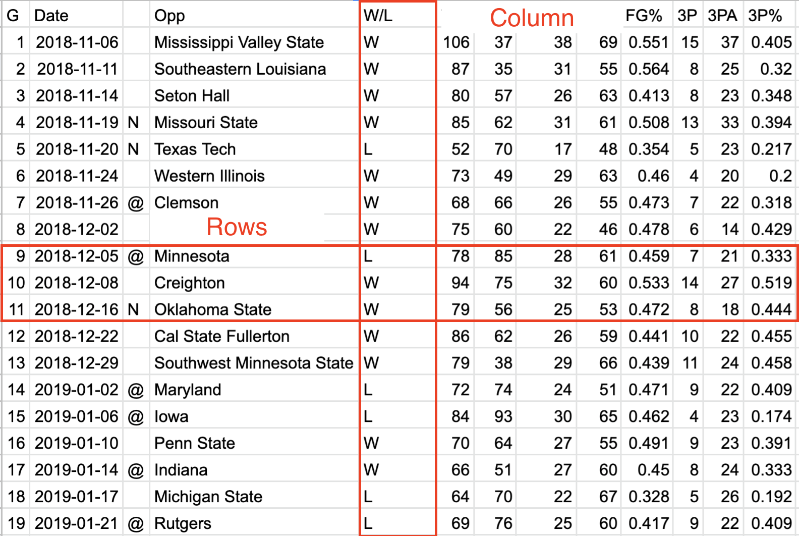
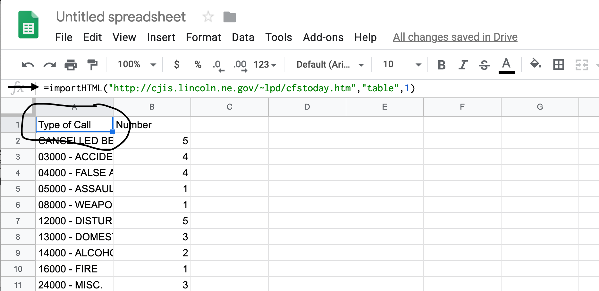
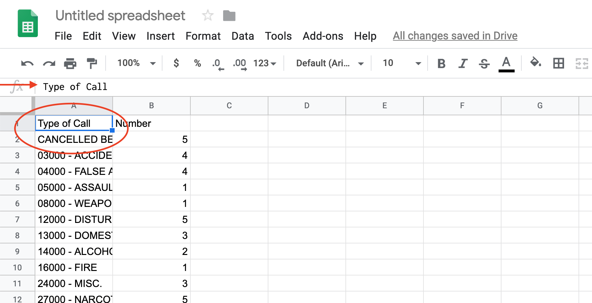

5 Data, structures and types
Data are everywhere (and data is plural of datum, thus the use of are in that statement). It surrounds you. Every time you use your phone, you are creating data. Lots of it. Your online life. Any time you buy something. It’s everywhere. News, like life, is no different. Modernity is drowning in data, and more comes along all the time.
In news, and in this class, we’ll be dealing largely with two kinds of data: event level data and summary data. It’s not hard to envision event level data. A car accident. A crime. A fire. They are the events that make up the whole. Combine them together – summarize them – and you’ll have some notion of how the year went. What we usually see is summary data – who wants to scroll through 365 days of crime data to figure out if crime was up or down?
To start with, we need to understand the shape of data.
5.1 Rows and columns
Data, oversimplifying it a bit, is information organized. Generally speaking, it’s organized into rows and columns. Rows, generally, are individual elements. A crime. A county. An accident. Columns, generally, are components of the data, sometimes called variables. So if each row is a crime, the first column might be the type. The second is the date and time. The third is the location. And so on.
One of the critical components of data analysis, especially for beginners, is having a mental picture of your data. What does each row mean? What does each column in each row signify? How many rows do you have? How many columns?
EXERCISE: I love orange Skittles. What are my chances of getting more orange Skittles than other colors in a fun sized packet? Each person in the class must track their package and everyone else using a spreadsheet. What differences between sheets emerge? What similarities?
5.2 Types
There are scores of data types in the world, and R has them. In this class, we’re primarily going to be dealing with data frames, and each element of our data frames will have a data type.
Typically, they’ll be one of four types of data:
- Numeric: a number, like the number of car accidents in a year or the number of journalism majors.
- Character: Text, like a name, a county, a state.
- Date: Fully formed dates – 2019-01-01 – have a special date type. Elements of a date, like a year (ex. 2019) are not technically dates, so they’ll appear as numeric data types.
- Logical: Rare(ish), but every now and then we’ll have a data type that’s Yes or No, True or False, etc.
Question: Is a zip code a number? Is a jersey number a number? Trick question, because the answer is no. Numbers are things we do math on. If the thing you want is not something you’re going to do math on – can you add two phone numbers together? – then make it a character type. If you don’t, most every software system on the planet will drop leading zeros. For example, every zip code in Boston starts with 0. If you record that as a number, your zip code will become a four digit number, which isn’t a zip code anymore.
5.3 A simple way to get data
The hardest part of doing data journalism is often getting the data. In news, there’s scores of organizations and agencies collecting data, and zero standards on how it’s being collected.
If we’re lucky – huge IF in news – the data we want is in a downloadable format. If we’re a little less lucky, there’s a way to get the data on the web. And maybe that data is in a simple table. If so, we can pull that data directly into Google Sheets.
The Lincoln Police Department publishes a daily summary of calls. Some days – like when it snows – that data becomes news. So let’s pretend that it snowed today and we need to see how many accidents the Lincoln Police responded to and what percentage of their call load that represents.
Open a browser and go to the LPD’s log page. Now, in a new tab, log into Google Docs/Drive and open a new spreadsheet. In the first cell of the first row, copy and paste this formula in:
=importHTML("http://cjis.lincoln.ne.gov/~lpd/cfstoday.htm","table",1)importHTML and the three inputs in order are the url of the page, the HTML tag we’re after (a
tag in our case) and the number of the tag you’re after. So our function says go to the LPD page and get the first table tag you find. Fortunately for us, there’s only one.
If your version worked right, you’ve got the data from that page in a spreadsheet.
5.4 Cleaning the data
The first thing we need to do is recognize that we don’t have data, really. We have the results of a formula. You can tell by putting your cursor on that field, where you’ll see the formula again. This is where you’d look:

The solution is easy:
Edit > Select All or type command/control A Edit > Copy or type command/control C Edit > Paste Special > Values Only or type command/control shift V
You can verify that it worked by looking in that same row 1 column A, where you’ll see the formula is gone.

Now you have data, but look closely. At the bottom of the data, you have the total number of calls. More often than not, and particularly the deeper into this book we go, you want to delete that. So click on the number next to that Total Calls line to highlight it and go up to Edit > Delete Row XX where XX is the row number.
After you’ve done that, you can export it for use in R. Go to File > Download as > Comma Separated Values.